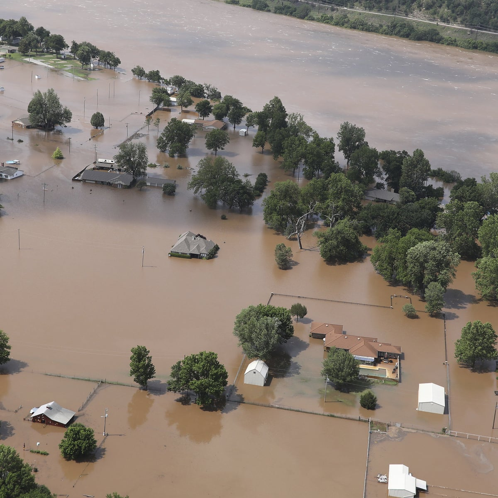

DISASTER

DISASTERS IN THE WORLD
Disaster is a serious problem occurring
over a short or long period of time that causes
widespread human, material, economic or
environmental loss which exceeds the ability
of the affected community or society to cope
using its own resources.
Natural disasters are caused due to different
reasons like soil erosion, seismic activity, tectonic
movements, air pressure, and ocean currents etc.
There are two types of disaster: natural
and man-made. ... Natural Disaster: A disaster
caused by natural factors called as a natural
disaster e.g., earthquake, flood, cyclone etc.
2. Man-made disaster: A disaster caused due to the
human activities e.g., wars, fire accidents, industrial accidents
- flood
- cyclones
- tsunami
DISASATERS
DISASTER RECORDS
| Type |
year |
Place |
| flood |
2020 |
Kerala |
| cyclone |
2015 |
Maharashtra |
| Tsunami |
2000 |
Meghalaya |